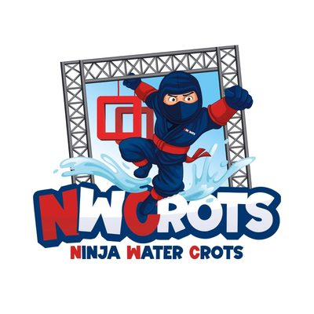
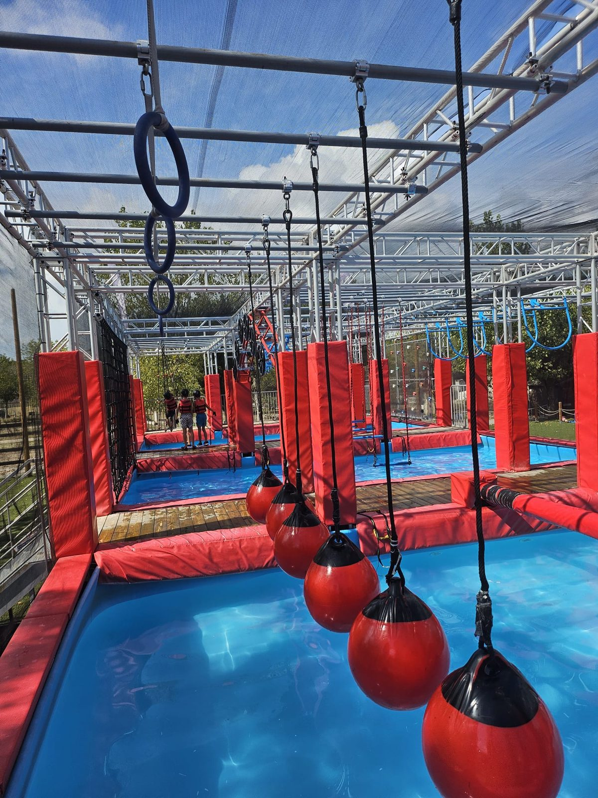
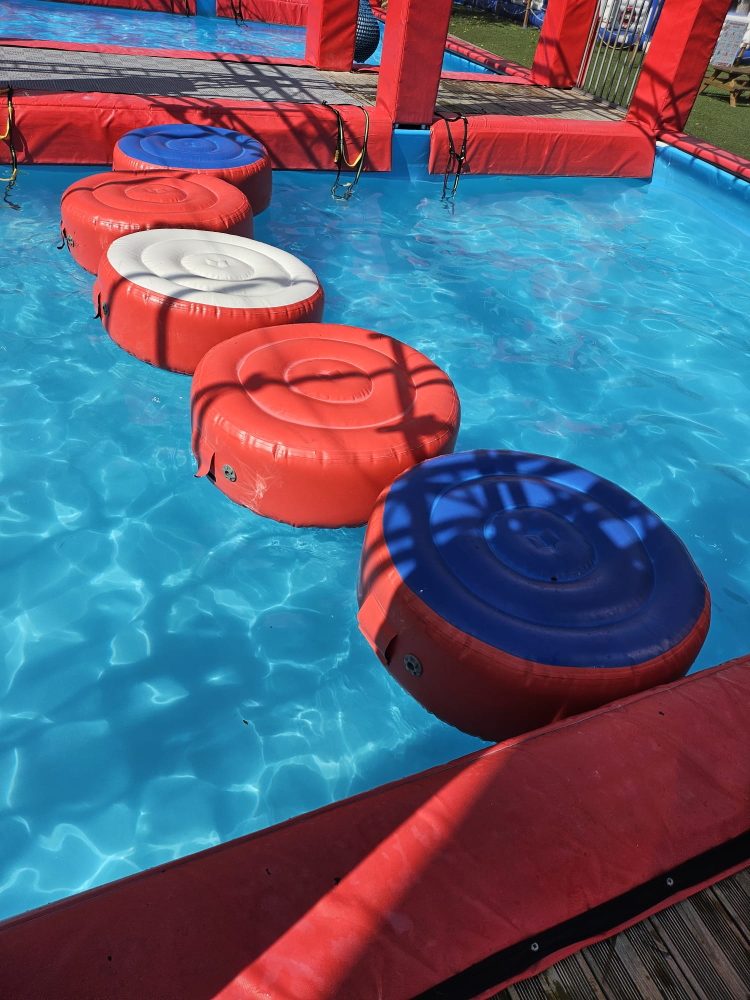
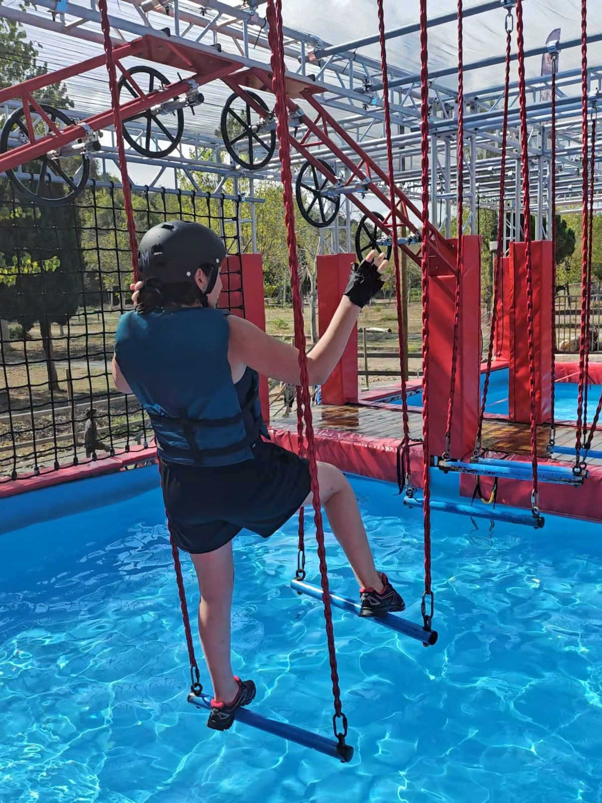
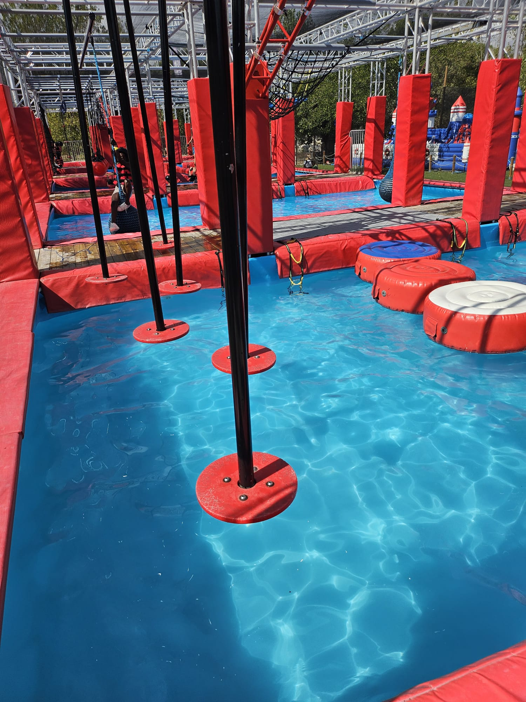
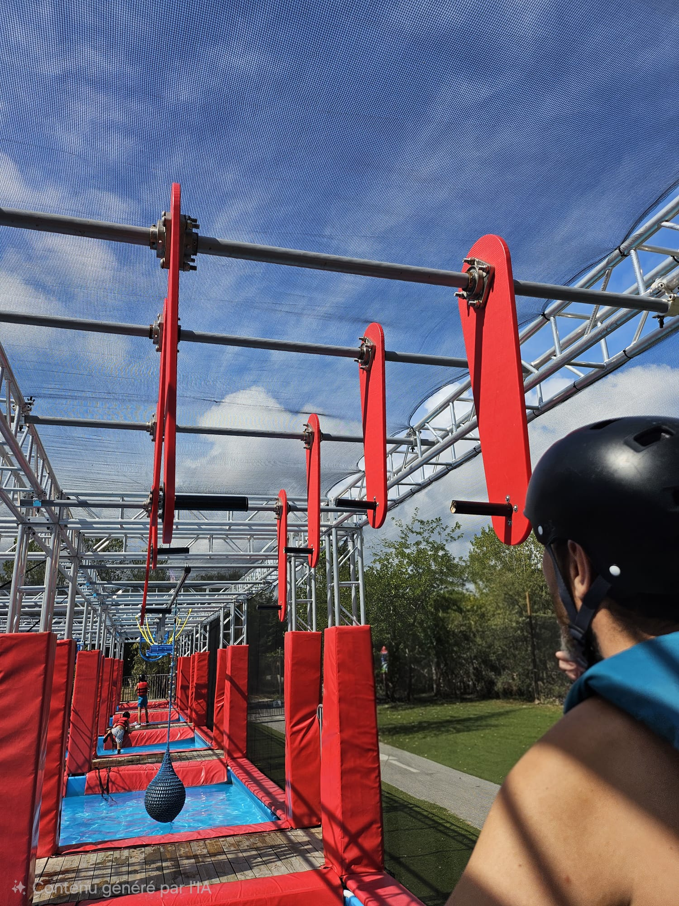
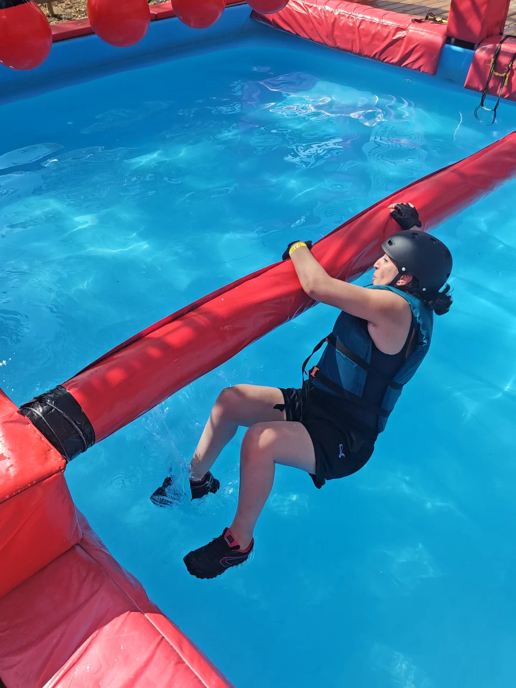
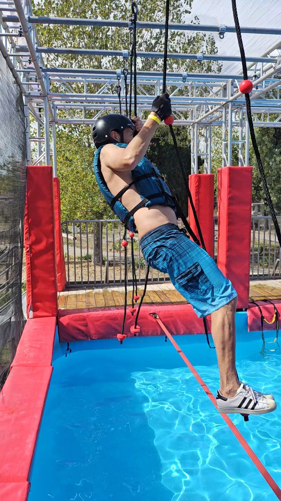
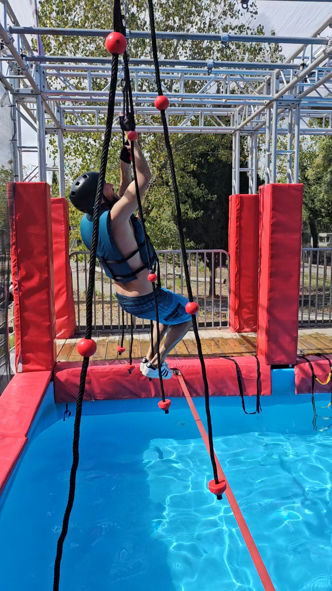

🥷 Le Défi Ninja
Plusieurs obstacles techniques sur 300 m² au-dessus de l'eau. Relevez le défi en solo, en famille ou entre amis et tentez d'atteindre le buzzer final !

Prépare-toi pour ton défi Ninja Water Crots.
Le 1er Ninja Water du 05 — inspiré du Ninja Warrior
🚀 Ouverture officielle : Juillet 2026Découvrez NWCROTS à la plage de Chanterenne, le seul et unique Ninja Water du département, directement inspiré de la célèbre émission Ninja Warrior ! Affrontez de véritables obstacles techniques suspendus au-dessus de l'eau : force, équilibre, agilité et mental seront vos meilleurs alliés. Chrono, performance ou pur fun entre amis et en famille — serez-vous à la hauteur du buzzer ?
Plusieurs obstacles techniques sur 300 m² au-dessus de l'eau. Relevez le défi en solo, en famille ou entre amis et tentez d'atteindre le buzzer final !
Un espace aquatique ludique dédié aux enfants de moins de 7 ans, pour qu'ils profitent eux aussi en toute sécurité.
Transats et pergolas ombragés, tables de pique-nique, vestiaires, douches et toilettes sur place. Glaces, boissons à disposition.




Chez NWCROTS, la sécurité est notre priorité absolue. Notre structure est entièrement sécurisée pour que vous puissiez vous amuser l'esprit tranquille en respectant évidemment les consignes de sécurité.
Gilet de sauvetage et casque fournis. Pensez à venir avec un maillot de bain et des baskets.
Pas de panique en cas de glissade, c'est direct le grand PLOUF dans l'eau ! On a tout prévu pour vous protéger : zéro risque, que du fun.
Accessible aux adultes et enfants dès 7 ans. Chacun progresse à son rythme, du débutant au plus sportif.




Des formules adaptées à tous, petits et grands. Cliquez sur une formule pour voir les détails.
Cliquez sur une formule ci-dessus pour voir le détail.
La formule pour venir relever le défi sur une journée, à partir de 7 ans.
Réservée aux enfants de moins de 7 ans : 10 sessions de 2h à l'espace aquatique ludique, à utiliser quand vous le souhaitez. La formule maligne pour les petits habitués.
Nominatif, à partir de 7 ans pour les enfants et adultes. Accès illimité toute la saison.
Anniversaires, EVG / EVJF, sorties de groupe… Contactez-nous pour organiser votre venue.
💳 Paiements acceptés : espèces, ANCV (Chèques-Vacances), CB, Visa et Mastercard.
Vous avez relevé le défi ? Partagez votre expérience ! Vos avis Google apparaîtront bientôt ici.
🏅 Les premiers avis arrivent dès l'ouverture du parc.
Laisser un avis sur GoogleUne question, un groupe, un anniversaire ou un EVG/EVJF à organiser ? Contactez-nous directement par téléphone.
📞 06 50 81 20 75
📧 ninjawatercrots@gmail.com
Plage de Chanterenne
05200 Crots
Au bord du lac de Serre-Ponçon, entre Embrun et Savines-le-Lac.
Ouvert 7j/7 en juillet et août
10h - 19h (dernier départ à 17h30)
Ouverture officielle : juillet 2026.